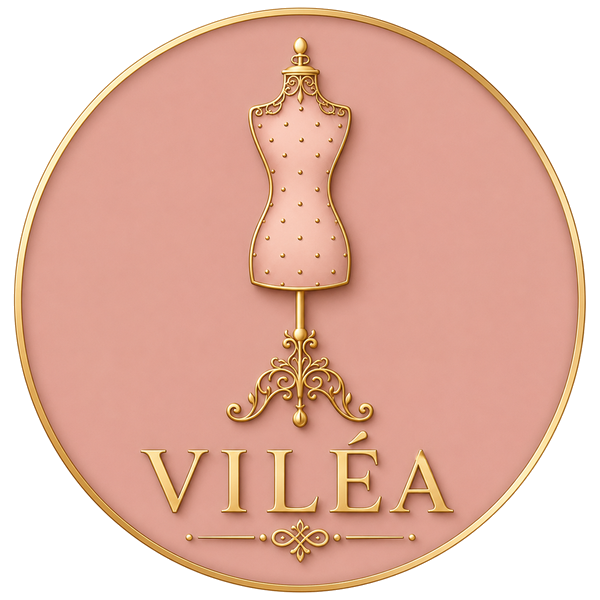

Opravy & restaurace
Trhliny, díry, rozbité zipy, utržené knoflíky, prasklé švy, poškozené podšívky. Vrátíme vašemu oblíbenému kousku plný komfort a důstojnost.
Více o opravách →
Roztržené, příliš velké, vyšlé z módy nebo prostě potřebující druhou šanci? Opravíme, upravíme, přešijeme — aby vaše nejoblíbenější kousky zase žily. A když už nic nepomůže, ušijeme nové. Ručně, v Praze.
Věříme, že dobrý kus oblečení si zaslouží druhou, třetí i desátou šanci. Než skončí v koši, dejte nám šanci ho zachránit.
Víleá Atelier je malý pražský ateliér pro všechny, kdo věří, že oblečení není na jedno použití. Opravujeme trhliny, vyměňujeme zipy, měníme střihy, pečujeme o denim — a když už opravdu nic nejde zachránit, ušijeme nový kousek přesně pro vás.
Pracujeme ručně, pomalu a s důrazem na každý steh. Protože víme, že za každým oděvem je příběh — a ten si zaslouží pokračování.
Někdy stačí opravit. Jindy přešít. A občas je potřeba začít úplně od začátku. Ke každému kousku přistupujeme s rozhodnutím, co mu dá největší smysl.
Trhliny, díry, rozbité zipy, utržené knoflíky, prasklé švy, poškozené podšívky. Vrátíme vašemu oblíbenému kousku plný komfort a důstojnost.
Více o opravách →Přešijeme velikost, zúžíme pas, zkrátíme nohavice, upravíme ramena. Vdechneme vašim šatům nový život — přesně podle vaší postavy.
Více o úpravách →Milujeme denim a věříme, že pořádné džíny s příběhem se nevyhazují. Opravy kolen, zúžení, zkrácení s originálním švem, sashiko výšivky.
Více o denim →Když už opravdu nic nejde zachránit, ušijeme pro vás nový kousek. Večerní šaty, svatební róby, kostýmky, kabáty — od první skicy po závěrečnou zkoušku.
Více o šití na míru →Začínáme u kávy. Přineste kousek, který máte rádi, a povězte nám, co potřebuje. Společně posoudíme, jestli stačí oprava, přešití, nebo zda dáme přednost kompletní přeměně.
Pečlivě prozkoumáme látku, švy, stav. Navrhneme nejlepší cestu — ať už jde o decentní opravu, kterou nebude vidět, nebo o úpravu střihu, která změní celý charakter kousku.
Šijeme, páráme, opravujeme — vše ručně v ateliéru. Žádná průmyslová výroba, žádné zkratky. Každý steh je rozhodnutí, každá oprava má svůj rukopis.
Hotový kousek předáme osobně. Poradíme, jak o něj pečovat, aby vám sloužil co nejdéle. A samozřejmě — kdykoli se můžete vrátit.
Ať už potřebuje jen drobnou opravu, nebo pořádnou přeměnu — uděláme maximum, aby zase žil. Domluvte si nezávaznou konzultaci.
Zachránit váš kousek